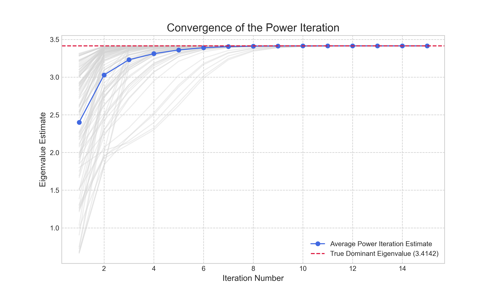
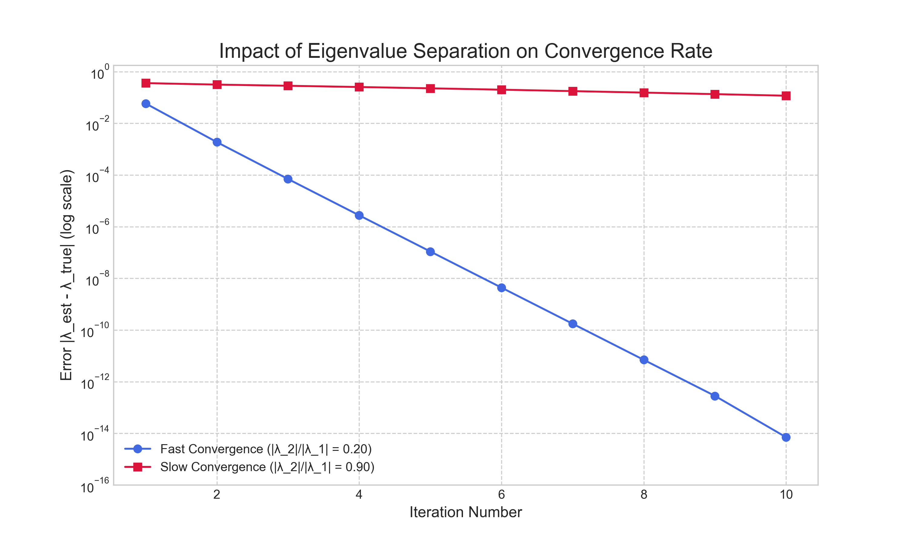
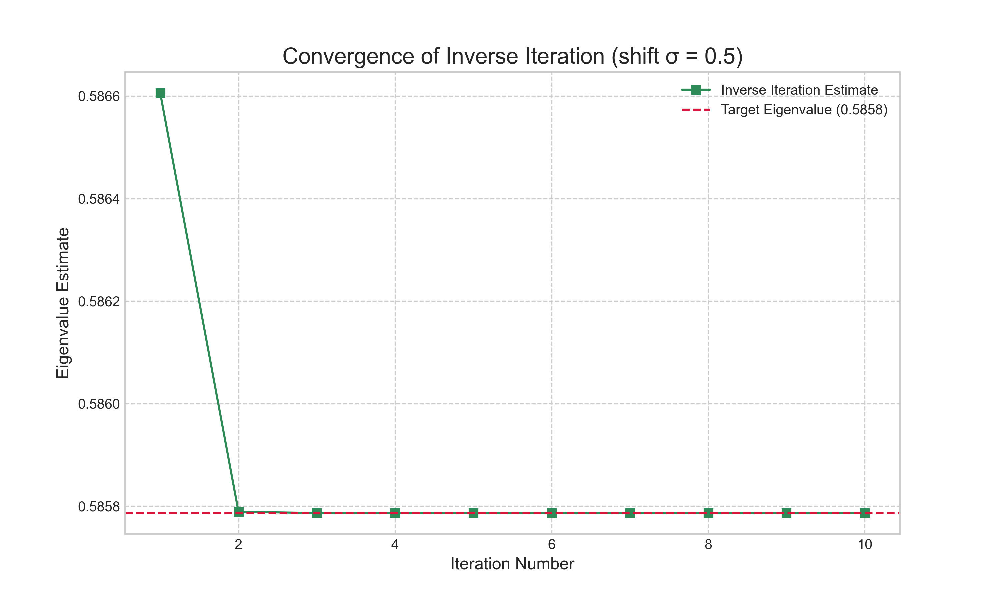
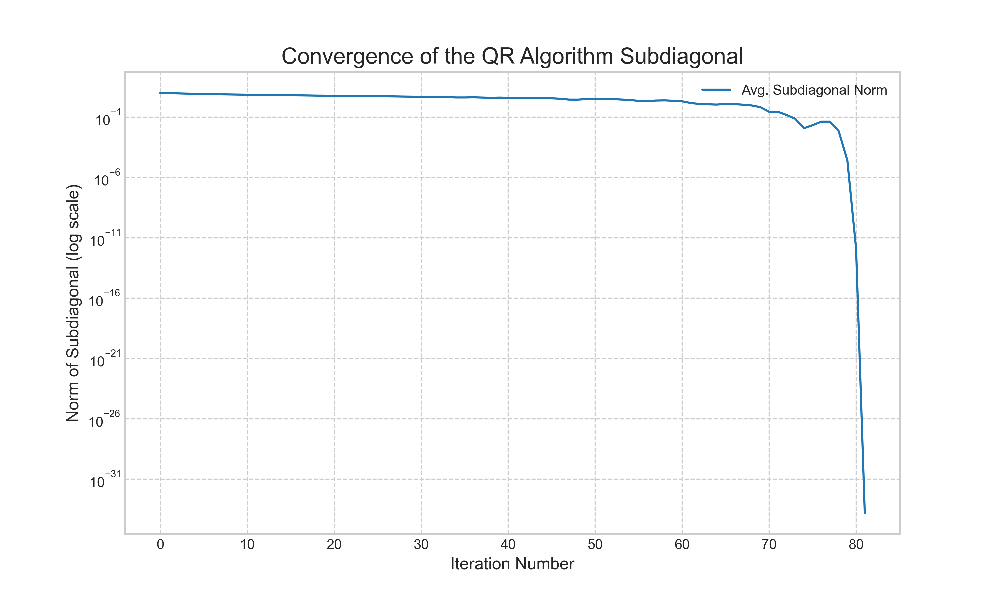
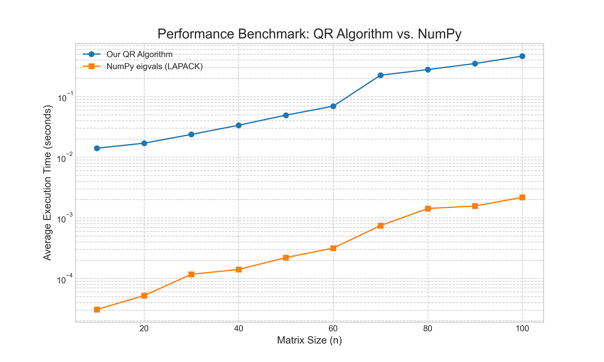

In our previous articles, we focused on the fundamental problem of solving linear systems, $\mathbf{A}\mathbf{x} = \mathbf{b}$. We navigated the challenges of numerical stability, culminating in the SVD as the most robust tool for understanding and solving such systems. We now turn our attention to a problem of a different, yet equally fundamental, nature: the eigenvalue problem. The goal is no longer to solve for an unknown vector $\mathbf{x}$, but to find the special vectors $\mathbf{v}$ and corresponding scalars $\lambda$ that satisfy the equation $\mathbf{A}\mathbf{v} = \lambda\mathbf{v}$. These eigenvalues and eigenvectors reveal the deep structural properties of a matrix, describing the directions in which the linear transformation $\mathbf{A}$ acts as a simple scaling.
For anyone who has taken a first course in linear algebra, a standard method for finding eigenvalues immediately comes to mind: solve the characteristic polynomial. This involves finding the roots of the equation $\det(\mathbf{A} - \lambda\mathbf{I}) = 0$. For a $2 \times 2$ or even a $3 \times 3$ matrix, this is a perfectly viable analytical technique. One computes the determinant, finds the coefficients of the resulting polynomial in $\lambda$, and solves for its roots. This direct, algebraic approach is clean, intuitive, and gives the exact answer. It is also, for any matrix of a practical size, a complete computational dead end.
The textbook method performs poorly in the world of finite-precision arithmetic for two fundamental reasons. First, the computational cost is prohibitive. The process of symbolically computing the determinant to find the polynomial's coefficients is computationally expensive, far exceeding the polynomial costs of the matrix factorizations we have studied. Second, and more critically, the problem is numerically sensitive. The roots of a polynomial can be highly sensitive to tiny perturbations in its coefficients. The very act of computing these coefficients from the matrix $\mathbf{A}$ introduces small floating-point errors. For a high-degree polynomial, these minuscule initial errors can be magnified into large, meaningless errors in the computed eigenvalues. This phenomenon, famously demonstrated by Wilkinson's polynomial, makes the characteristic polynomial a numerically unstable path.
Because direct solution methods are computationally infeasible and numerically unstable, the entire field of practical eigenvalue computation is built on an entirely different foundation: iterative algorithms. Instead of trying to solve the problem all at once, these methods start with an initial guess and progressively refine it, converging toward the true solution. In this article, we will explore this iterative approach, starting with one of the oldest and most intuitive methods, the Power Iteration, which allows us to find the single largest eigenvalue of a matrix. This will build the foundation for understanding the more sophisticated algorithms, like the QR algorithm, that are used in modern scientific computing.
The Power Iteration: Finding the Dominant Eigenvalue
The simplest iterative method for finding an eigenvalue is the Power Iteration. Its appeal lies in its simple implementation, which consists of nothing more than repeated matrix-vector multiplication. The algorithm is designed to find the single eigenvalue with the largest magnitude, known as the dominant eigenvalue, and its corresponding eigenvector.
The process begins by initializing a random vector, $\mathbf{v}_0$. Then, in a loop, we repeatedly apply the matrix $\mathbf{A}$ to our most recent vector and normalize the result:
The underlying theory is elegant. Assuming the matrix $\mathbf{A}$ has a set of linearly independent eigenvectors $\{\mathbf{u}_1, \mathbf{u}_2, \dots, \mathbf{u}_n\}$ with corresponding eigenvalues $\{\lambda_1, \lambda_2, \dots, \lambda_n\}$, sorted such that $|\lambda_1| > |\lambda_2| \ge \dots \ge |\lambda_n|$, our initial random vector $\mathbf{v}_0$ can be expressed as a linear combination of these eigenvectors:
Applying the matrix $\mathbf{A}$ to this vector once yields:
After $k$ applications, the result becomes:
Since $\lambda_1$ is strictly dominant in magnitude, all the ratios $(\lambda_i / \lambda_1)$ for $i > 1$ are less than one. As $k$ becomes large, these terms $(\lambda_i / \lambda_1)^k$ approach zero. Consequently, the entire expression becomes increasingly dominated by the first term, $c_1\lambda_1^k\mathbf{u}_1$. The vector $\mathbf{A}^k\mathbf{v}_0$ aligns itself with the direction of the dominant eigenvector, $\mathbf{u}_1$. The normalization step at each iteration simply prevents the vector's magnitude from growing uncontrollably.
Once the vector $\mathbf{v}_k$ has converged to the dominant eigenvector, we can estimate the corresponding eigenvalue $\lambda_1$ using the Rayleigh quotient:
This provides a robust and efficient way to approximate the dominant eigenvalue from our computed eigenvector. To demonstrate this in practice, we implemented the Power Iteration. Because the random starting vector can slightly alter the path to convergence, we run the algorithm multiple times and average the results to show the expected behavior. The convergence is illustrated in Figure 1. The plot shows that while individual trials (faint gray lines) vary, the average estimate (solid blue line) converges rapidly to the true dominant eigenvalue.

The rate of this convergence, however, is not always the same and is governed by the ratio of the sub-dominant to the dominant eigenvalue, $|\lambda_2|/|\lambda_1|$. To illustrate this, we applied the algorithm to two matrices with the same dominant eigenvalue but different sub-dominant eigenvalues. The results, shown in Figure 2, are striking. For the matrix with a small eigenvalue ratio ($|\lambda_2|/|\lambda_1| = 0.20$), the error decreases linearly and rapidly on the logarithmic scale. In contrast, for the matrix with a large ratio ($|\lambda_2|/|\lambda_1| = 0.95$), the error decreases at a much slower rate. This experiment visually confirms that the convergence rate is governed by this ratio and highlights a key limitation: the method can be impractically slow if the dominant eigenvalue is not well-separated from the others.

Inverse Iteration: Finding Other Eigenvalues
The Power Iteration is effective but limited; it can only find the single, dominant eigenvalue. To find other eigenvalues—for instance, the smallest, or one in the middle of the spectrum—we can employ a clever modification of the same core idea. This method is known as Inverse Iteration.
The insight is to apply the Power Iteration not to the matrix $\mathbf{A}$, but to the inverse of a shifted matrix, $(\mathbf{A} - \sigma\mathbf{I})^{-1}$. If $\lambda_i$ is an eigenvalue of $\mathbf{A}$ with eigenvector $\mathbf{v}_i$, then a simple algebraic manipulation shows that $1/(\lambda_i - \sigma)$ is an eigenvalue of $(\mathbf{A} - \sigma\mathbf{I})^{-1}$ with the exact same eigenvector $\mathbf{v}_i$. The scalar $\sigma$ is a "shift" that we choose. By selecting a shift $\sigma$ that is very close to a desired eigenvalue $\lambda_j$ of the original matrix $\mathbf{A}$, the term $1/(\lambda_j - \sigma)$ becomes very large, while all other eigenvalues of the inverse matrix remain relatively small. This makes $1/(\lambda_j - \sigma)$ the dominant eigenvalue of the inverse matrix.
This is a powerful result. It means we can apply the Power Iteration to $(\mathbf{A} - \sigma\mathbf{I})^{-1}$ and it will converge to the eigenvector $\mathbf{v}_j$ corresponding to the eigenvalue of $\mathbf{A}$ that is closest to our shift $\sigma$. We can effectively "tune" the algorithm to find any eigenvalue we want, provided we have a reasonable estimate of its value. For example, to find the smallest eigenvalue of $\mathbf{A}$, we can simply set the shift $\sigma = 0$ and apply the Power Iteration to $\mathbf{A}^{-1}$.
In practice, we never explicitly compute the matrix inverse, as this is a costly and numerically unstable operation. Instead, the core step of the Power Iteration, which was $\mathbf{v}_{k+1} = \mathbf{A}\mathbf{v}_k$, becomes $(\mathbf{A} - \sigma\mathbf{I})\mathbf{w} = \mathbf{v}_k$, where we solve for the vector $\mathbf{w}$ and then normalize it to get $\mathbf{v}_{k+1}$. This is a standard linear system solve, which can be performed efficiently. For a fixed shift $\sigma$, we can compute the LU decomposition of $(\mathbf{A} - \sigma\mathbf{I})$ once at the beginning, and then each iteration requires only a fast forward and back substitution, making the method highly efficient.
To see this in action, we implemented the Inverse Iteration method. Using the same sample matrix from our Power Iteration example, whose eigenvalues are approximately {0.5858, 2.0, 3.4142}, we can now target the smallest eigenvalue. By choosing a shift of $\sigma = 0.5$, which is close to 0.5858, the algorithm should converge to this value. The results are shown in Figure 3. The plot demonstrates the remarkable speed of the method; the estimate converges to the correct eigenvalue in just two iterations. This confirms the power of the shift-and-invert strategy: a good shift not only allows us to isolate any eigenvalue of interest but can also lead to extremely fast convergence.

The QR Algorithm: The Industry Standard for Eigenvalue Problems
While the Power and Inverse Iteration methods are powerful tools for finding individual eigenvalues, the most common task is to find the entire spectrum at once. For this, the industry-standard algorithm for dense matrices is the QR algorithm. The full, production-level QR algorithm is a sophisticated piece of numerical software, but its effectiveness is built upon three core concepts: the basic iterative process, a preliminary reduction to Hessenberg form for efficiency, and the use of shifts to accelerate convergence.
The basic, unshifted QR algorithm follows a simple iterative process. We begin with our original matrix, $\mathbf{A}_0 = \mathbf{A}$. Then, for each step $k$, we perform a QR decomposition and multiply the factors back together in the reverse order:
- Compute the QR factorization: $\mathbf{A}_k = \mathbf{Q}_k\mathbf{R}_k$
- Form the next iterate: $\mathbf{A}_{k+1} = \mathbf{R}_k\mathbf{Q}_k$
This transformation creates a new matrix, $\mathbf{A}_{k+1}$, which is similar to $\mathbf{A}_k$ (since $\mathbf{A}_{k+1} = \mathbf{R}_k\mathbf{Q}_k = (\mathbf{Q}_k^T\mathbf{A}_k)\mathbf{Q}_k$). Because similar matrices have the same eigenvalues, this process generates a sequence of matrices that all share the same eigenvalues as our original matrix $\mathbf{A}$. The remarkable property of this iteration is that for many matrices, the sequence $\mathbf{A}_k$ converges to the Schur form. For a real matrix with real eigenvalues, this is an upper triangular matrix whose diagonal entries are the eigenvalues. If the real matrix has complex eigenvalues, it converges to a quasi-triangular form, which is upper triangular with $2 \times 2$ blocks on the diagonal corresponding to the complex conjugate pairs. For a complex matrix, the result is always an upper triangular matrix with the complex eigenvalues on the diagonal. In all cases, the eigenvalues can be easily extracted from this final form.
However, the basic algorithm is too slow for practical use, as a full QR factorization at each step costs $O(n^3)$ operations. To make the algorithm efficient, two crucial enhancements are applied. First, the matrix $\mathbf{A}$ is initially reduced to the much sparser upper Hessenberg form. A Hessenberg matrix is upper triangular with just one additional non-zero subdiagonal. This reduction is done using a series of similarity transformations (e.g., via Householder reflectors), which preserve the eigenvalues of the original matrix, in a single, upfront $O(n^3)$ step. The key property is that if $\mathbf{A}_k$ is in Hessenberg form, the next iterate $\mathbf{A}_{k+1}$ will also be in Hessenberg form. This structure is preserved throughout the iteration, which is a massive optimization because the QR factorization of a Hessenberg matrix costs only $O(n^2)$ operations, as we only need to eliminate a single element per column.
Second, to accelerate convergence, the algorithm incorporates shifts. At each step, a shift $\sigma_k$ is chosen, and the factorization is performed on the shifted matrix. The full shifted step is:
- Choose a shift $\sigma_k$ (e.g., the bottom-right entry of $\mathbf{A}_k$).
- Factor the shifted matrix: $\mathbf{A}_k - \sigma_k\mathbf{I} = \mathbf{Q}_k\mathbf{R}_k$.
- Recombine and add the shift back: $\mathbf{A}_{k+1} = \mathbf{R}_k\mathbf{Q}_k + \sigma_k\mathbf{I}$.
Crucially, this three-step process is a similarity transformation ($\mathbf{A}_{k+1} = \mathbf{Q}_k^T\mathbf{A}_k\mathbf{Q}_k$), so the eigenvalues are preserved at every step. The shift is a clever algebraic trick that does not change the eigenvalues of the sequence but dramatically accelerates convergence. The effect is that the bottom-right entry of the matrix, $a_{nn}^{(k)}$, converges to an eigenvalue much more quickly (quadratically, in fact). Once an eigenvalue is found, the algorithm can "deflate" the problem by locking in that value and continuing the process on the smaller $(n-1) \times (n-1)$ submatrix. By combining these strategies—an initial reduction to Hessenberg form followed by a sequence of efficient, shifted QR steps with deflation—the modern QR algorithm can reliably compute the entire spectrum of eigenvalues with an average total complexity of $O(n^3)$.
To demonstrate these concepts, the following Python code provides a more complete implementation of the QR algorithm. It includes the essential features of a practical solver: a function to reduce the matrix to Hessenberg form, and the main iterative loop which incorporates both shifting and a simple deflation strategy. While it is not as optimized as a production library like LAPACK, it illustrates the core components that make the QR algorithm so effective.
import numpy as np
def hessenberg_reduction(A):
"""
Reduces a square matrix A to upper Hessenberg form using
Householder reflectors.
"""
n = A.shape[0]
H = np.copy(A)
for k in range(n - 2):
# Extract the vector for the Householder transformation
x = H[k+1:n, k]
# Create the reflector
e1 = np.zeros_like(x)
e1[0] = 1.0
v = np.sign(x[0] or 1) * np.linalg.norm(x) * e1 + x
v = v / np.linalg.norm(v)
# Apply the transformation to the right
H[k+1:n, k:n] = H[k+1:n, k:n] - 2 * np.outer(v, v.T @ H[k+1:n, k:n])
# Apply the transformation to the left
H[0:n, k+1:n] = H[0:n, k+1:n] - 2 * np.outer(H[0:n, k+1:n] @ v, v.T)
return H
def qr_algorithm_shifted(A, max_iterations=1000, tol=1e-12):
"""
Computes eigenvalues of A using the QR algorithm with shifts
and deflation.
"""
n = A.shape[0]
# 1. Initial reduction to Hessenberg form
H = hessenberg_reduction(A)
eigenvalues = []
# Iterate until all eigenvalues are found
current_size = n
while current_size > 0:
i = 0
for i in range(max_iterations):
# Check for deflation
subdiagonal = np.diag(H, -1)
# Find the last non-zero subdiagonal element
p = current_size - 1
while p > 0 and abs(subdiagonal[p-1]) < tol:
p -= 1
# If the whole subdiagonal is zero, the matrix has split
if p == 0:
break
# Find the first non-zero subdiagonal element from the end
q = p - 1
while q > 0 and abs(subdiagonal[q-1]) > tol:
q -= 1
# 2. Perform a shifted QR step on the active submatrix
submatrix = H[q:p+1, q:p+1]
# Simple shift: use the bottom-right element
shift = submatrix[-1, -1]
if submatrix.shape[0] > 1:
a, b, c, d = submatrix[-2,-2], submatrix[-2,-1], submatrix[-1,-2], submatrix[-1,-1]
delta = (a + d) / 2
sign = 1 if delta >= 0 else -1
# Use a safe sqrt to avoid issues with complex numbers for now
sqrt_discriminant = np.sqrt(delta**2 - (a*d - b*c) + 0j)
shift = d - (c*b) / (delta + sign * sqrt_discriminant)
Q, R = np.linalg.qr(submatrix - shift * np.identity(submatrix.shape[0]))
H[q:p+1, q:p+1] = R @ Q + shift * np.identity(submatrix.shape[0])
if i == max_iterations -1:
print("Warning: QR algorithm did not converge.")
return eigenvalues + list(np.diag(H))
# 3. Deflation: an eigenvalue has converged
# The last element of the current block is an eigenvalue
eigenvalues.append(H[current_size-1, current_size-1])
current_size -= 1
# "Deflate" by reducing the size of the matrix we work on
H = H[0:current_size, 0:current_size]
return eigenvalues
Numerical Results and Performance
To see the practical effects of these enhancements, we performed two experiments. First, we tracked the internal state of our practical QR algorithm as it ran. Figure 4 plots the norm of the subdiagonal of the Hessenberg matrix at each iteration. The plot shows that for many iterations, the norm decreases slowly. Then, as the shift strategy begins to lock onto an eigenvalue, the norm drops off sharply. This sudden drop signifies that a subdiagonal element has become negligible, allowing the algorithm to "deflate" a converged eigenvalue and proceed with a smaller matrix. This cycle repeats until all eigenvalues are found.

Second, we benchmarked the execution time of our implementation against NumPy's eigvals function, which is a wrapper for highly optimized LAPACK libraries. The results, shown in Figure 5, are illustrative. While both algorithms exhibit the expected $O(n^3)$ complexity, the professional-grade library is several orders of magnitude faster. This demonstrates the significant performance gains achieved through low-level code optimization, but also confirms that our high-level implementation correctly captures the fundamental complexity of the algorithm.

Conclusion
Our exploration of the eigenvalue problem has revealed a computational landscape starkly different from that of solving linear systems. The familiar, direct methods from introductory linear algebra are unworkable in practice, rendered obsolete by prohibitive costs and numerical instability. The field is instead dominated by iterative algorithms that begin with a guess and systematically refine it. We saw this principle in its simplest form with the Power Iteration for finding the dominant eigenvalue, and extended it with Inverse Iteration to target any eigenvalue with a reasonable estimate. These foundational methods culminated in the modern QR algorithm, a sophisticated combination of strategies—Hessenberg reduction, shifting, and deflation—that work in concert to efficiently find the entire spectrum of eigenvalues. This journey from simple theory to a complex, practical algorithm underscores the central theme of this series: that a deep understanding of computational trade-offs is a practical necessity for ensuring the correctness and reliability of any numerical result.